A word-for-word walkthrough script for presenting the platform live — paired with real screenshots of every screen, so you can talk through exactly what the audience is seeing at each step.
“Vianova Health is an AI-assisted clinical decision platform built for doctors — not patients. It takes a patient's presenting complaint and history, runs it through structured AI analysis, and gives the doctor a confidence-scored clinical read in seconds — while a superadmin layer keeps every case assigned, tracked, and auditable.
Everything you're about to see is the real, running product — not mockups.”
“Today, clinical case review is scattered across disconnected tools — notes in one place, labs in another, a second opinion over the phone, and no single record of who decided what. That slows doctors down and makes compliance a nightmare.”
“Vianova unifies case intake, AI-assisted reasoning, doctor review, team messaging, and full audit logging into one role-aware application — closed to only two roles: Superadmin and Doctor. There is no patient-facing login; this is a clinical tool, not a consumer app.”
“Access starts here. There's no public sign-up — accounts are provisioned by a superadmin, and every login is tied to a real clinical identity.”
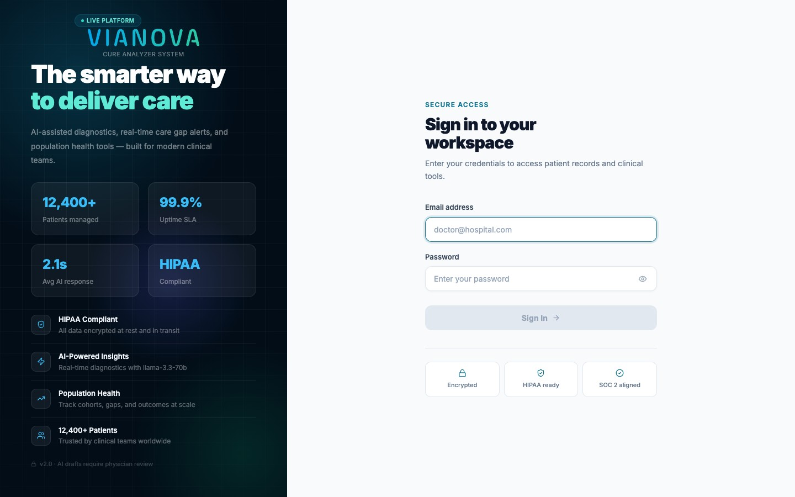
“This is home base. At a glance: total cases, anything flagged urgent or emergency, what's pending review, and what's already approved. Below that, trend charts — cases over time and a breakdown by condition — so a clinical lead can spot patterns, not just individual cases.”
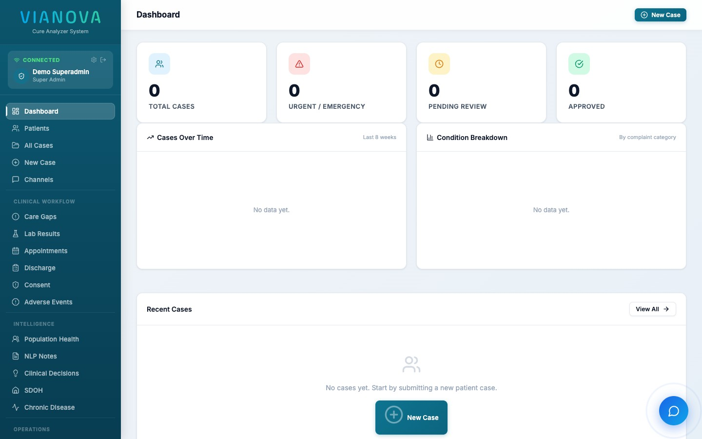
“This is the core workflow. Instead of a blank text box, we walk the doctor through five focused steps so nothing gets missed.”
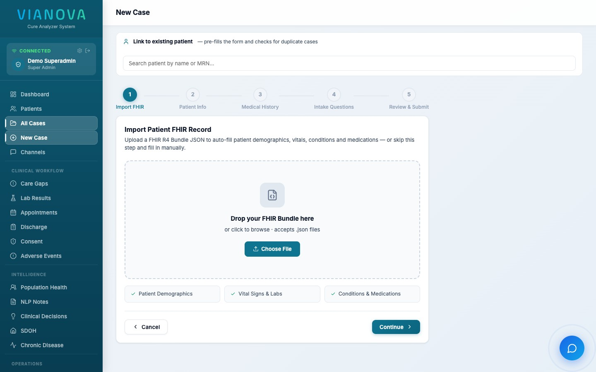
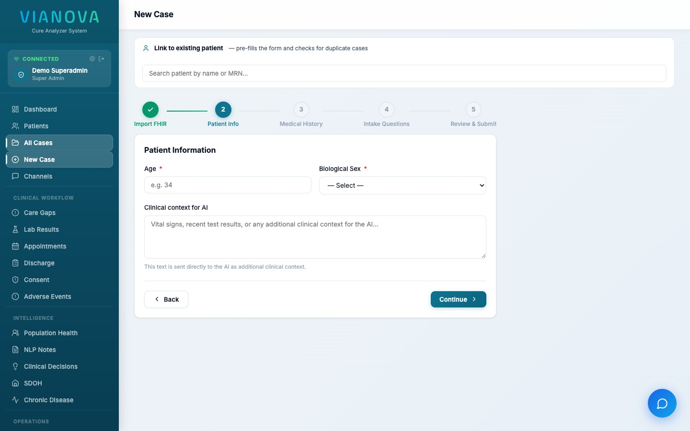
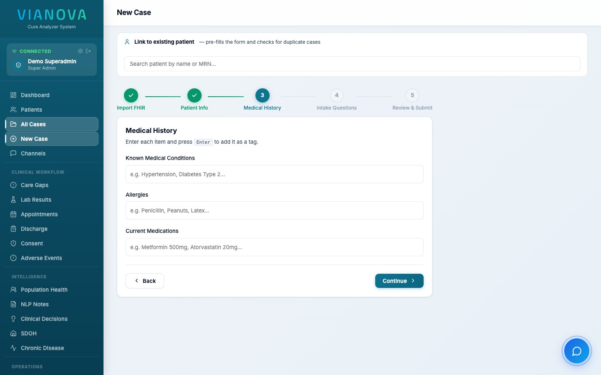
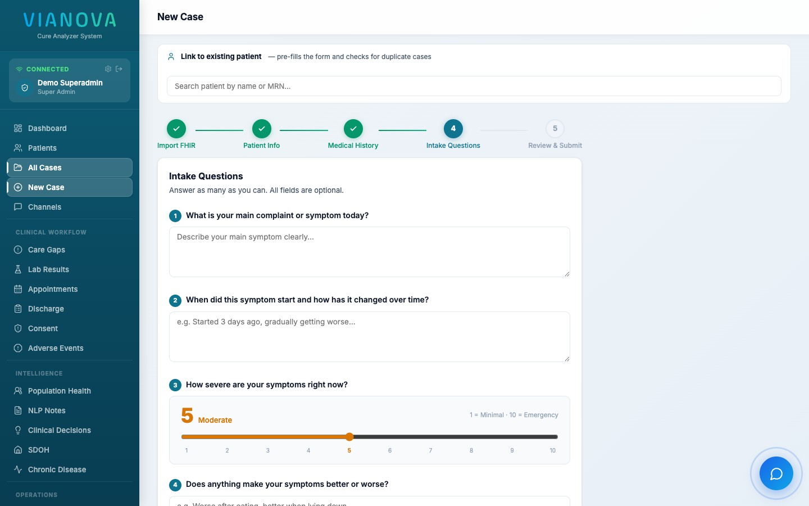
“Step five is Review & Submit — the doctor double-checks everything, then the AI engine takes over and returns a structured, confidence-scored clinical analysis: presenting complaint, likely conditions, and an emergency flag if warranted.”
“Every case created lives here, filterable by status, confidence, and date range — color-coded so emergencies and pending reviews jump out immediately.”
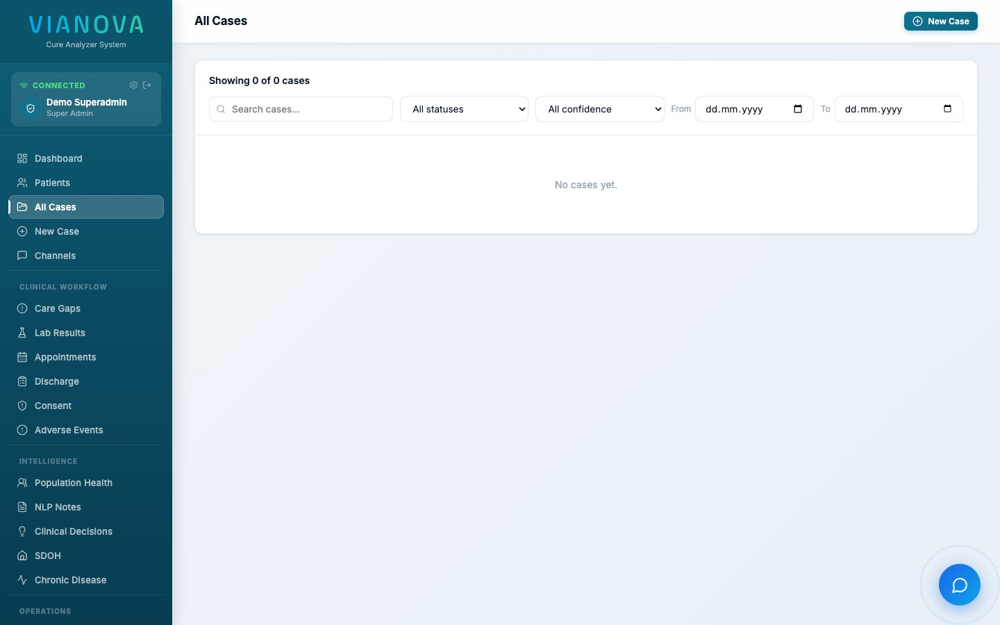
“Cases roll up to patient records, so a doctor sees longitudinal history, not just a one-off encounter.”
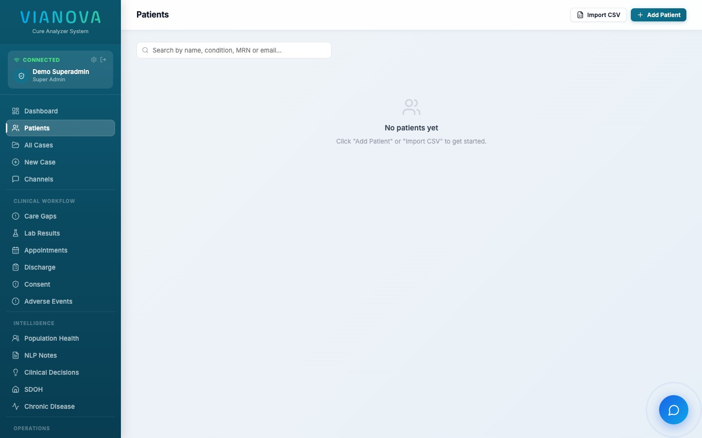
“Clinical decisions often need a second opinion. Channels give doctors a dedicated, in-app space to discuss a case with colleagues — no stepping outside the platform, no unsecured texting.”
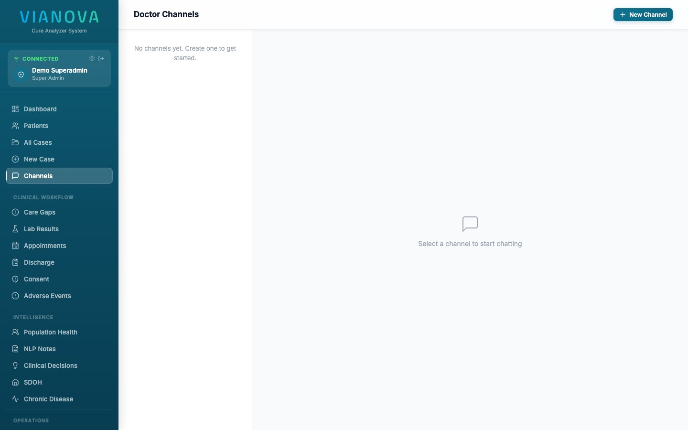
“This panel only exists for superadmins. It's where cases get assigned to specific doctors, users are managed, and the whole system stays accountable — every assignment is logged with who, when, and by whom.”
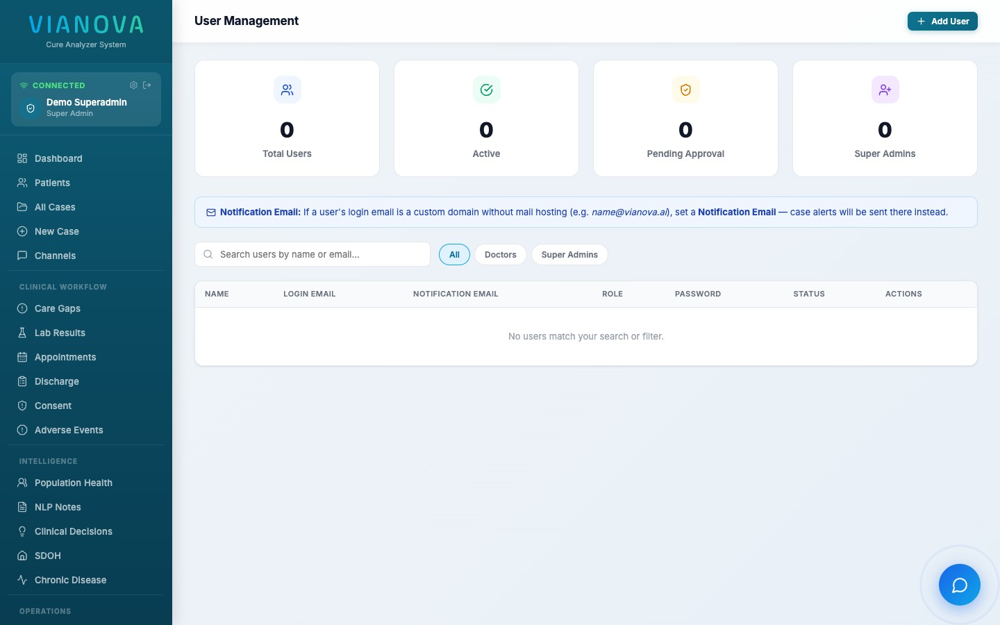
“Beyond individual cases, Vianova aggregates data across the whole patient population — spotting care gaps and surfacing adverse event / safety signals automatically, using statistical signal detection, not just manual reporting.”
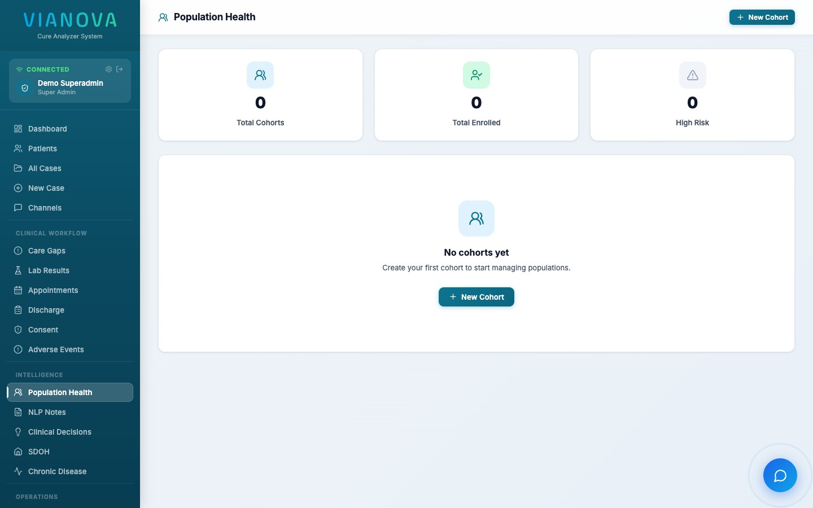
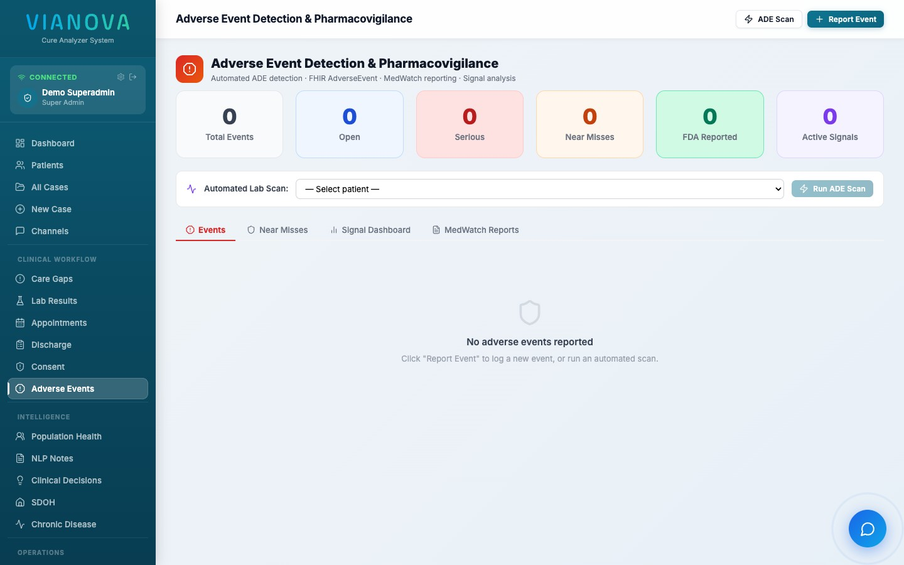
“Only two roles exist: Superadmin, who manages users, assigns cases, and oversees the whole system; and Doctor, who creates and reviews cases. There is no patient login — this is a closed clinical system by design.”
“Every action — case creation, assignment, approval — is written to an audit log. Emergency-flagged cases are surfaced immediately, not buried in a queue. And because access is role-gated at the API level, a doctor can never see another doctor's unassigned cases or admin controls.”
“That's Vianova Health — one platform, from symptom to signed-off treatment, built for how clinical teams actually work. I'd love to get this in front of your team for a hands-on pilot.”